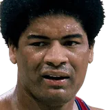

His best final NBA finish was #6 of 17, with the 1973-74 Los Angeles Lakers. In his 227 games for 2 teams over 4 seasons they went 121–106 (53.3%), +15 games over .500, with an average final finish of 9.0.
Jump to: Record by opponent · Season by season · Teammate help
Compare Stan Love with…
Final NBA finish, season by season
Title Finals Other playoffs Missed playoffs. #1 = champion; the dashed line is last place that season. Each point opens that season's final standings.
All 17 teams ranked in 1973-74, his best finish (#6)Teammate help
- Gail Goodrich6.02 seasons
- Archie Clark4.01 season
 Elvin Hayes4.01 season
Elvin Hayes4.01 season
Career
Career records (W–L, W − L, with and without) include 2026-27 games through Nov. 24, 2026; season counts and finishes are through 2025-26. Each card opens its board in the same scope. How we count.

Latest completed seasons
Season by season
Newest first; every header sorts. Final NBA finish is the team's rank among all teams that season (#1 = champion) and opens that season's standings. "Without him" uses the team-season window; the span line counts only the games between his first and last game for the team.
| 1974-75 | #17 of 18 | 30–52 36.6% | Missed playoffs | 30 of 82 | 10–20 33.3% | 20–32 38.5%span: 8–8, gap −16.7 | −5.1 | |
| 1973-74 | #6 of 17 | 47–35 57.3% | Lost conf semis 1–4 | 51 of 82 | 32–19 62.7% | 15–16 48.4%span: 14–16, gap +16.1 | +14.4 | |
| 1972-73 | Baltimore3rd East | #6 of 17 | 52–30 63.4% | Lost conf semis 1–4 | 72 of 82 | 46–26 63.9% | 6–4 60.0%span: 6–4, gap +3.9 | +3.9 |
| 1971-72 | Baltimore3rd East | #7 of 17 | 38–44 46.3% | Lost conf semis 2–4 | 74 of 82 | 33–41 44.6% | 5–3 62.5%span: 5–3, gap −17.9 | −17.9 |
Teammate help by season
Help this season = Teammates Score points for honors won that season by teammates who shared a game with him, with every teammate that adds to it. Only honors won in that same season count. How help works.
- 1974-75
 LA Lakers
Gail Goodrich All-Star124 gJim Price All-Star17 gBrian Winters All-Rookie 1st0.2526 g
LA Lakers
Gail Goodrich All-Star124 gJim Price All-Star17 gBrian Winters All-Rookie 1st0.2526 g
Help this season: 2.25 = 1 Gail Goodrich + 1 Jim Price + 0.25 Brian Winters
Other teammates (no honors that season): Elmore Smith 30 g, Happy Hairston 27 g, Zelmo Beaty 25 g, Lucius Allen 22 g, Pat Riley 20 g, Connie Hawkins 20 g, Corky Calhoun 17 g, Kermit Washington 16 g, Stu Lantz 12 g, Bill Bridges 11 g, Cazzie Russell 3 g
- 1973-74LA Lakers
Gail Goodrich All-NBA 1stAll-Star551 g
 Jerry West All-Star120 gJim Price All-Def 2nd0.551 g
Jerry West All-Star120 gJim Price All-Def 2nd0.551 g
Help this season: 6.5 = 5 Gail Goodrich + 1 Jerry West + 0.5 Jim Price
Other teammates (no honors that season): Elmore Smith 50 g, Pat Riley 46 g, Happy Hairston 46 g, Connie Hawkins 42 g, Bill Bridges 36 g, Mel Counts 34 g, Kermit Washington 28 g, Nate Hawthorne 24 g, Travis Grant 3 g
- 1972-73Baltimore
Elvin Hayes All-NBA 2ndAll-Star471 g

Wes Unseld All-Star169 gMike Riordan All-Def 2nd0.572 gHelp this season: 5.5 = 4 Elvin Hayes + 1 Wes Unseld + 0.5 Mike Riordan
Other teammates (no honors that season): Dave Stallworth 63 g, Kevin Porter 63 g, Phil Chenier 62 g, John Tresvant 46 g, Rich Rinaldi 32 g, Flynn Robinson 31 g, Archie Clark 31 g, Tom Patterson 20 g, Mike Davis 13 g, Terry Driscoll 1 g
- 1971-72Baltimore
Archie Clark All-NBA 2ndAll-Star468 gJack Marin All-Star172 gWes Unseld All-Star168 gPhil Chenier All-Rookie 1st0.2573 g
Help this season: 6.25 = 4 Archie Clark + 1 Jack Marin + 1 Wes Unseld + 0.25 Phil Chenier
Other teammates (no honors that season): John Tresvant 57 g, Dave Stallworth 56 g, Mike Riordan 50 g, Dorie Murrey 49 g, Rich Rinaldi 36 g, Terry Driscoll 36 g, Gus Johnson 34 g, Gary Zeller 24 g, Earl Monroe 3 g, Kevin Loughery 2 g, Fred Carter 2 g
Record against each opponent
- Most playoff series against one franchise: 2 against the New York Knicks, 0–2 in series and 2–3 in games.
Regular season, through 2025-26 (2026-27 games not included): 227 games, 121–106, against 18 franchises.
Grouped by franchise (named as today); game lists keep each team's name that season. Filters and the tab are kept in the URL, so a filtered view can be shared.
| Games list | |||||||
|---|---|---|---|---|---|---|---|
| 17 | 11–6 | 64.7% | +5 | N/A | 1971-72 to 1974-75 | ||
| 17 | 7–10 | 41.2% | −3 | 0–2 (2–3 in games) | 1971-72 to 1974-75 | ||
| 16 | 8–8 | 50.0% | 0 | N/A | 1971-72 to 1974-75 | ||
| 16 | 10–6 | 62.5% | +4 | N/A | 1971-72 to 1974-75 | ||
| 15 | 5–10 | 33.3% | −5 | N/A | 1971-72 to 1974-75 | ||
| 15 | 10–5 | 66.7% | +5 | N/A | 1971-72 to 1974-75 | ||
| 14 | 6–8 | 42.9% | −2 | N/A | 1971-72 to 1974-75 | ||
| 14 | 6–8 | 42.9% | −2 | N/A | 1971-72 to 1974-75 | ||
| 14 | 5–9 | 35.7% | −4 | N/A | 1971-72 to 1974-75 | ||
| 14 | 9–5 | 64.3% | +4 | N/A | 1971-72 to 1974-75 | ||
| 13 | 7–6 | 53.8% | +1 | N/A | 1971-72 to 1974-75 | ||
| 13 | 9–4 | 69.2% | +5 | N/A | 1971-72 to 1974-75 | ||
| 12 | 7–5 | 58.3% | +2 | N/A | 1971-72 to 1973-74 | ||
| 12 | 5–7 | 41.7% | −2 | 0–1 (0–2 in games) | 1971-72 to 1974-75 | ||
| 11 | 11–0 | 100.0% | +11 | N/A | 1971-72 to 1974-75 | ||
| 8 | 1–7 | 12.5% | −6 | N/A | 1971-72 to 1972-73 | ||
| 4 | 2–2 | 50.0% | 0 | N/A | 1973-74 to 1974-75 | ||
| 2 | 2–0 | 100.0% | +2 | N/A | 1974-75 |
Rows add up to his career record in his games. A playoff series counts when he played in it; early round-robin games show as games only. How we count.
Playoffs, with and without him
| 1973-74 | Lost in the conference semifinals 1–4 to | #6 of 17 | 2 of 5 | 0–2 0.0% | 1–2 33.3% | −33.3 | |
| 1972-73 | Baltimore | Lost in the conference semifinals 1–4 to | #6 of 17 | 1 of 5 | 0–1 0.0% | 1–3 25.0% | −25.0 |
| 1971-72 | Baltimore | Lost in the conference semifinals 2–4 to | #7 of 17 | 4 of 6 | 2–2 50.0% | 0–2 0.0% | +50.0 |
Arrival and departure
Team wins per 82 games the season before he arrived vs his first season there, and his last season vs the season after he left. He leaves a team only when his next season with games is for another team (or he never plays again); whole seasons he missed and came back from are one "Missed" row with the team's record without him. Per 82 so short seasons compare fairly. These are team records, not a measure of what he did.
| Left | after 1974-75 | 1974-75: 30–52 30.0 per 82 | 1975-76: 40–42 40.0 per 82 without him | +10.0 wins | |
| Arrived | 1973-74 | 1972-73: 60–22 60.0 per 82 | 1973-74: 47–35 47.0 per 82 | −13.0 wins | |
| Left | Baltimore | after 1972-73 | 1972-73: 52–30 52.0 per 82 | 1973-74: 47–35 47.0 per 82 without him | −5.0 wins |
| Debut | Baltimore | 1971-72 | 1970-71: 42–40 42.0 per 82 | 1971-72: 38–44 38.0 per 82 | −4.0 wins |
Best duos
Team record in regular-season games both played, top 10 by win %, at least 50 games together.
- Kevin Porter 42–21 66.7%
- Elvin Hayes
46–25 64.8%
- Dave Stallworth 71–48 59.7%
- Jim Price 34–24 58.6%
- Mike Riordan 70–52 57.4%
- Wes Unseld 78–59 56.9%
- Happy Hairston 40–33 54.8%
- Archie Clark 54–45 54.5%
- Phil Chenier 73–62 54.1%
- Gail Goodrich 40–35 53.3%
With and without his teammates
His 12 teammates with the most regular-season games together. "Together" is the team's record in the games both played for it; "Without him" is the team's record in the games Stan Love played for that team while the teammate was on it (between the teammate's first and last game for the team, the appearance span) and the teammate did not play. Fewer than 20 games without him: no gap. Games through Nov. 24, 2026. How we count.
- Wes UnseldBaltimore 1971-72 to 1972-73
- Together
- 78–59 56.9%
- Without him
- 1–8 11.1%
- Gap
- Too few games without him
- Phil ChenierBaltimore 1971-72 to 1972-73
- Together
- 73–62 54.1%
- Without him
- 6–5 54.5%
- Gap
- Too few games without him
- Mike RiordanBaltimore 1971-72 to 1972-73
- Together
- 70–52 57.4%
- Without him
- N/A N/A
- Gap
- Too few games without him
- Dave StallworthBaltimore 1971-72 to 1972-73
- Together
- 71–48 59.7%
- Without him
- 3–10 23.1%
- Gap
- Too few games without him
- John TresvantBaltimore 1971-72 to 1972-73
- Together
- 53–50 51.5%
- Without him
- 25–17 59.5%
- Gap
- 8.1 points higher
- Archie ClarkBaltimore 1971-72 to 1972-73
- Together
- 54–45 54.5%
- Without him
- 0–1 0.0%
- Gap
- Too few games without him
- Elmore SmithLA Lakers 1973-74 to 1974-75
- Together
- 42–38 52.5%
- Without him
- 0–1 0.0%
- Gap
- Too few games without him
- Gail GoodrichLA Lakers 1973-74 to 1974-75
- Together
- 40–35 53.3%
- Without him
- 2–4 33.3%
- Gap
- Too few games without him
- Happy HairstonLA Lakers 1973-74 to 1974-75
- Together
- 40–33 54.8%
- Without him
- 2–6 25.0%
- Gap
- Too few games without him
- Jack MarinBaltimore 1971-72
- Together
- 32–40 44.4%
- Without him
- 1–1 50.0%
- Gap
- Too few games without him
- Elvin HayesBaltimore 1972-73
- Together
- 46–25 64.8%
- Without him
- 0–1 0.0%
- Gap
- Too few games without him
- Rich RinaldiBaltimore 1971-72 to 1972-73
- Together
- 34–34 50.0%
- Without him
- 44–30 59.5%
- Gap
- 9.5 points higher